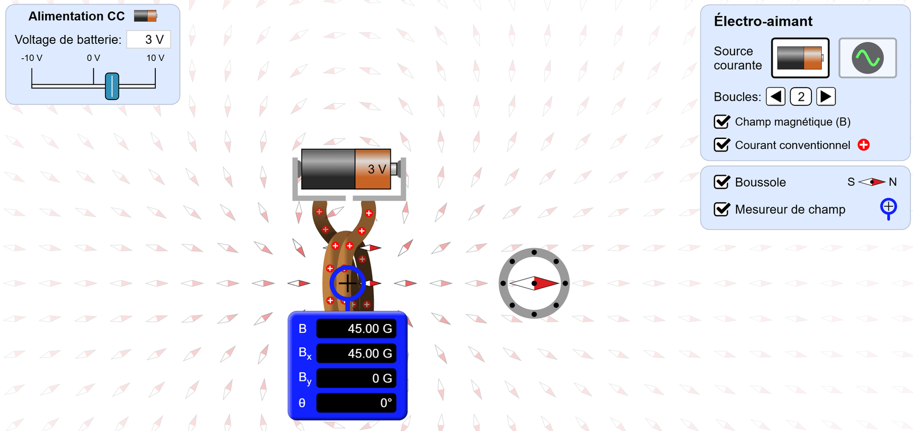
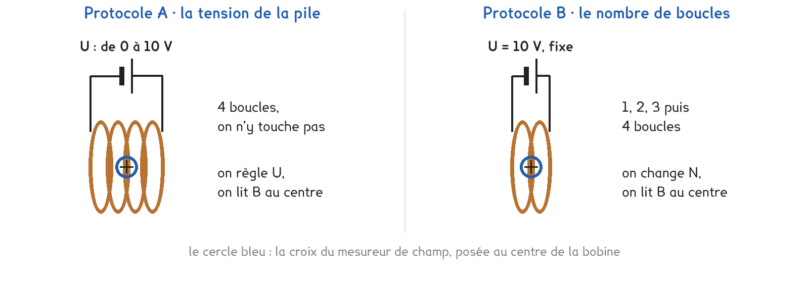
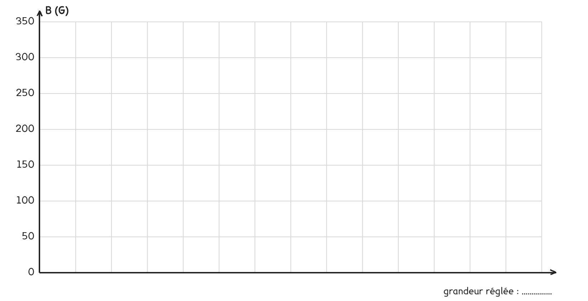

1re Bac Pro · MELEC · CIEL · TP sur simulation SIM-10
Comment régler l'intensité du champ magnétique d'une bobine, et comment en changer le sens ?
3 figures
Sujet. Dans le hall d’un immeuble, on appuie sur le bouton de l’interphone et la porte se déverrouille. Dans la serrure, une bobine traversée par un courant devient un aimant et attire une pièce de fer.
Problématique : comment régler l’intensité du champ magnétique d’une bobine, et comment en changer le sens ?
La simulation. « Labo électromagnétique de Faraday », écran « Électro-aimant », sur phet.colorado.edu : ouvrir l’écran Électro-aimant. Sans réseau : la copie hors ligne, fichier phet/faradays-electromagnetic-lab_fr.html.

Capture de la simulation « Labo électromagnétique de Faraday », PhET Interactive Simulations, University of Colorado Boulder, CC BY-NC 4.0.
a) Sur la capture, relever la tension de la pile, le nombre de boucles et B.
U = ……………… · nombre de boucles N = ……………… · B au centre de la bobine = ………………
Sur la capture, de petits « + » rouges sont posés sur le fil de la bobine.
b) Que représentent-ils ? Dans quel sens se déplacent-ils dans le fil ?
Le mesureur affiche le champ en gauss (G). L’unité du système international est le tesla (T), et l’on retient : 1 G = 0,1 mT et 1 T = 1 000 mT.
c) Convertir en millitesla. Le premier est fait.
| Le champ | la capture | un aimant de frigo | la Terre | une IRM |
|---|---|---|---|---|
| En gauss | 45 G | 50 G | 0,5 G | 15 000 G |
| En millitesla | 4,5 mT | ……… mT | ……… mT | ……… mT |
Deux protocoles répondent à la même question. Une partie de la classe prend A, l’autre prend B, et on compare à la fin.

Protocole A · la tension. La bobine garde 4 boucles. On règle la tension de la pile de 0 à 10 V et on lit B au centre de la bobine.
Protocole B · les boucles. La pile reste à 10 V. On passe de 1 à 4 boucles et on lit B au même endroit.
d) Compléter le tableau pour comparer les deux protocoles.
| Protocole A | Protocole B | |
|---|---|---|
| Ce qu’on change | …………………………… | …………………………… |
| Ce qu’on garde fixe | …………………………… | …………………………… |
| Le nombre de mesures possibles | …………………………… | …………………………… |
Le choix se fait maintenant, avant d’ouvrir la simulation.
e) Quel protocole prenez-vous ? Justifier en une phrase.
Je prends le protocole ……… parce que ……………………………………………………………………
f) Avant de mesurer : si l’on double la grandeur qu’on change, B est…
inchangé · multiplié par 2 · multiplié par 4 · impossible à prévoir
Avant de commencer. Ouvrir l’écran « Électro-aimant ». La case du panneau de droite doit s’appeler « Courant conventionnel » ; sinon, choisir Préférences, Simulation, Flux courant : Conventionnel. Cocher « Mesureur de champ » et poser sa croix au centre de la bobine.
g) Écrire vos réglages sur la première ligne, puis relever B.
| Réglage : U (V) ou N | ……… | ……… | ……… | ……… | ……… | ……… |
|---|---|---|---|---|---|---|
| B (G) | ……… | ……… | ……… | ……… | ……… | ……… |
Sur le quadrillage, l’axe horizontal se gradue ainsi : protocole A, 1 cm pour 1 V ; protocole B, 3 cm pour une boucle.
h) Tracer B en fonction de la grandeur réglée.

Le sens du champ, pour les deux protocoles. Cocher « Boussole » et la poser à droite de la bobine, sur son axe. Pile à 10 V, puis inverser la pile : curseur à −10 V. On rappelle que le pôle nord de l’aiguille, en rouge, est repoussé par une face nord.
i) Observer et compléter, à 10 V puis à −10 V. Entourer.
| La pile | 10 V | −10 V |
|---|---|---|
| Les « + » sur l’avant des spires | montent · descendent | montent · descendent |
| Bx lu au mesureur | ……… G | ……… G |
| L’aiguille rouge de la boussole pointe | vers la bobine · à l’opposé | vers la bobine · à l’opposé |
| La face droite de la bobine est | nord · sud | nord · sud |
Le schéma se fait pour la pile à 10 V, borne + à droite comme dans la simulation : symboles normalisés, une flèche pour le courant, une flèche B dans la bobine, N et S sur les faces.
j) Schématiser la pile et la bobine, le sens du courant et le champ.
Le schéma se dessine sur la feuille du TP.
k) Votre courbe est-elle une droite qui passe par l’origine ? Conclure.
l) Comparer avec un groupe qui a pris l’autre protocole, puis compléter.
Le champ au centre de la bobine est proportionnel à ……………………… et à ………………………
La simulation n’affiche pas l’intensité I du courant : elle règle la tension U de la pile.
m) Pourquoi peut-on dire que B est proportionnel à I ? Penser à U = R × I.
n) Qu’ajouterait un vrai montage, avec ampèremètre et teslamètre ?
o) Répondre à la problématique en deux phrases.
Ce que ce TP a établi, pour toute bobine sans noyau de fer :
À RETENIR
Une bobine parcourue par un courant crée un champ magnétique. Sans noyau de fer, son intensité B est proportionnelle à l’intensité I du courant, et elle augmente avec le nombre de spires.
Le champ sort par la face nord et entre par la face sud. Inverser le courant inverse le champ : les deux faces échangent leurs noms.
Le champ magnétique se mesure en tesla (T) : 0,05 mT pour la Terre, quelques millitesla pour un aimant courant, 1,5 T dans une IRM.
On referme la main droite sur la bobine, les doigts dans le sens du courant sur les spires : le pouce tendu montre alors la face nord. Vérifier cette règle sur vos observations de la question i, à 10 V puis à −10 V.
TP sur simulation de physique-chimie, 1re Bac Pro MELEC et CIEL. Le travail se fait sur la feuille du TP : cette page en est la version à l'écran, sans les lignes à remplir. Rien n'est enregistré.